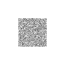

材料与能谱
NIST XCOM 数据导入、能量插值、单能与多能谱建模。
Physics-based · Python · Research platform
每一次投影，都有物理依据。
透明、可扩展的 X 射线正投影与 CT 前向仿真平台。
Physics first
从质量衰减系数、能谱和几何路径，到探测器响应与噪声，XRayForge 保留完整计算链路，适合科研验证、课程教学和定制开发。
One continuous pipeline
Controlled results
支持单材料、多材料 radiograph 与多角度 CT forward projection stack，并输出 CSV、PGM 或 TIFF。

Built-in interface
配置材料、能谱、phantom、成像几何和噪声，实时检查视场并生成投影。
Built to extend
NIST XCOM 数据导入、能量插值、单能与多能谱建模。
平行束、锥束、SOD/SDD、探测器尺寸与视场计算。
体素 phantom、STL 体素化、多材料路径长度与 mesh 接口。
先用 CPU 验证完整流程，再按研究规模接入 GPU 加速。
Private research software
XRayForge 目前采用私有分发。研究合作、功能演示或使用咨询，请联系开发者。